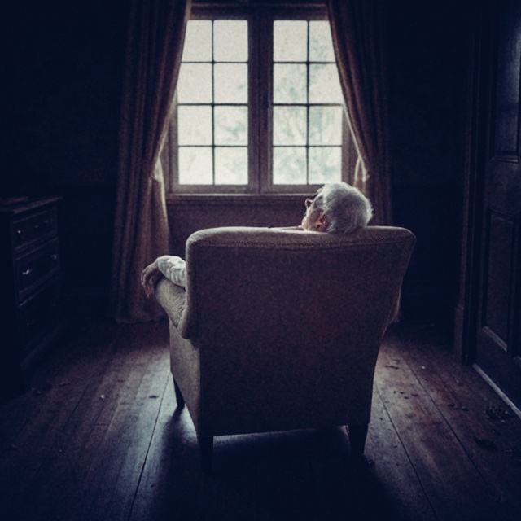

By the time she was found, my Grandmother had already begun to rot.
She was in the living room; flies-buzzing, maggots congregating, colonies of green mould with fine downy fuzz climbing over her.
I hadn’t been able to sleep since I found her. When I closed my eyes, the sound of her voice wrenched my lids open. She was lying beside me, between Lip and me. Her pale face glowed. She opened her mouth and her gums had turned charcoal black. I could see something moving inside her, beyond the pillars of her teeth, over the soft mound of her slimy tongue.
Read the Journals